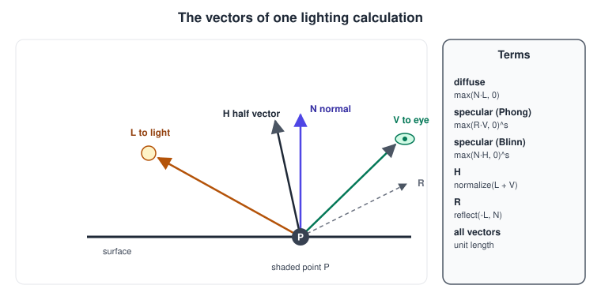
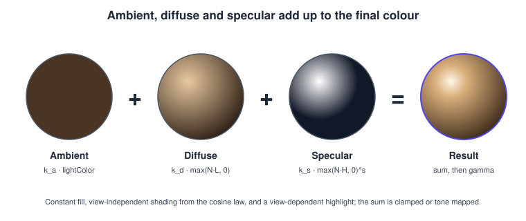
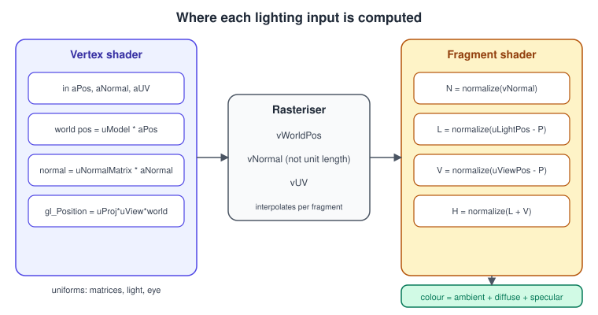
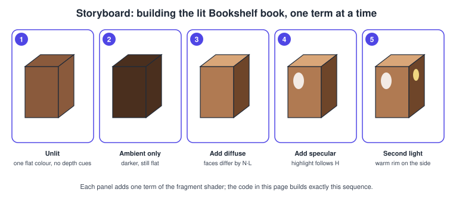

Lighting with Blinn-Phong in OpenGL
|
This content was generated with the assistance of AI and should be verified against the official documentation before being relied on in production. |
Lighting is where a flat-coloured mesh becomes an object with volume. In OpenGL there is no built-in lighting in the core profile: a fragment shader computes the colour of every pixel from a few vectors and a few material numbers, and the empirical Blinn-Phong model is the classic way to do it. This page builds the lit Bookshelf book step by step: it explains the vectors, transforms the normals correctly, writes a complete C++20 program with GLFW, glad2 and GLM and a pair of GLSL shaders, extends it to several lights with attenuation, and shows what changes for OpenGL ES.
The facts were checked in November 2026. The versions documented are OpenGL 4.6 with GLSL 4.60 and OpenGL ES 3.2 with GLSL ES
3.20. The code is written for a 4.1 core profile with #version 410 core, which is the highest version macOS offers, so it runs
unchanged on Windows, Linux and macOS; the ES variant uses #version 300 es, which every current Android device and the
WebGL 2 shading language support. Nothing on this page needs an extension. The concepts are explained independently of the API
in Lighting and Shading Models; here the focus is the OpenGL code, the data
that the shaders need and the mistakes that are specific to the API.
What the fragment shader needs to know
For every pixel the lighting calculation uses a small set of unit vectors at the shaded point P, all expressed in the same space:
-
N, the surface normal, perpendicular to the surface and pointing outwards.
-
L, the direction from the point towards the light.
-
V, the direction from the point towards the eye (the camera).
-
H, the half vector, halfway between L and V: \( \mathbf{H} = \mathrm{normalize}(\mathbf{L} + \mathbf{V}) \).
-
R, the mirror reflection of the light direction about the normal, used by the original Phong model only.

The model adds three terms, each with its own material coefficient and light colour:
| Term | Formula | Meaning |
|---|---|---|
Ambient |
\( k_a \, \mathbf{c}_l \) |
A constant fill that stands for light bounced around the room. It is not physically accurate, but without it the unlit side of an object is pitch black. |
Diffuse |
\( k_d \, \mathbf{c}_l \, \max(\mathbf{N}\cdot\mathbf{L},\,0) \) |
Lambert’s cosine law: a surface facing the light is brightest, a surface at a right angle receives nothing. Independent of the eye. |
Specular |
\( k_s \, \mathbf{c}_l \, \max(\mathbf{N}\cdot\mathbf{H},\,0)^{s} \) |
The glossy highlight. The exponent \( s \) (the shininess) controls how tight it is; a larger \( s \) gives a smaller, sharper highlight. Depends on the eye. |
The final colour is the sum of the three terms over all lights. The original Phong model computes the specular term with
\( \max(\mathbf{R}\cdot\mathbf{V},\,0)^{s} \); Blinn’s variant uses \( \mathbf{N}\cdot\mathbf{H} \), which avoids the
reflect call and keeps the highlight alive at grazing angles, where \( \mathbf{R}\cdot\mathbf{V} \) turns negative and cuts
the highlight off abruptly. For the same visual width the Blinn-Phong exponent is about four times the Phong exponent.

The sum is not energy conserving (a sharper highlight is not dimmer overall), has no Fresnel effect and cannot describe metals properly. It is still the right choice for stylised content, for low-end mobile GPUs and as the first lighting model to learn; the physically based alternative is the subject of PBR Basics. An optional correction that keeps highlights equally bright as the exponent changes multiplies the specular term by \( (s + 8) / (8\pi) \).
Normals and the normal matrix
The normal is vertex data: a vec3 stored with each vertex, as described in Meshes and Vertex Data and Buffers and Vertex Specification. A cube needs 24 vertices rather than 8 because the normal of a corner is different on each of the three faces that meet there; a smooth sphere, on the other hand, shares one averaged normal per vertex. Hard edges need duplicated vertices, soft surfaces need shared ones.
Normals are directions, not positions, and they do not transform like positions. If the model matrix \( M \) contains a non-uniform scale (the Bookshelf book is scaled to be tall, narrow and thin), multiplying the normal by \( M \) tilts it away from perpendicular. The correct transform is the inverse transpose of the upper 3x3 part of the matrix:
\[ \mathbf{n}' = ( M_{3 \times 3}^\{-1} )^{T} \, \mathbf{n} \]
For a rotation plus a uniform scale the result points the same way as \( M_{3 \times 3}\,\mathbf{n} \) and only its length
differs, which is why re-normalising fixes it. For a non-uniform scale the two differ, so always use the normal matrix. Compute it
on the CPU once per object (GLM has glm::inverseTranspose) and upload it as a mat3 uniform; computing inverse() in the
vertex shader repeats a matrix inversion for every vertex.

Light calculations can happen in world space or in view space (camera space). World space is easier to reason about and is used below: the vertex shader outputs the world position and world normal, and the fragment shader receives the eye position as a uniform. View space saves the eye uniform (the eye is the origin) and is common in engines. Pick one and never mix them: a light position in world space combined with a normal in view space is the most frequent cause of lighting that "moves with the camera".
The rasteriser interpolates the vertex normals linearly across the triangle, so the interpolated normal is shorter than 1. Normalise it again in the fragment shader. Lighting computed in the fragment shader is called per-fragment or Phong shading (not to be confused with the Phong reflection model); lighting computed in the vertex shader and interpolated is Gouraud shading, which is cheaper but misses highlights that fall inside a triangle.
A complete example: the lit, rotating book
The first program draws one Bookshelf book as a box 0.6 wide, 0.9 tall and 0.2 thick, lit by one point light that stands for the desk lamp. It needs no texture files, so it runs as soon as it compiles. The project layout and the GLFW and glad2 setup are explained in Getting Started on the Desktop; the shader programs in Shaders and Programs.
CMake
cmake_minimum_required(VERSION 3.24)
project(bookshelf_gl_lighting CXX)
set(CMAKE_CXX_STANDARD 20)
set(CMAKE_CXX_STANDARD_REQUIRED ON)
include(FetchContent)
FetchContent_Declare(glfw GIT_REPOSITORY https://github.com/glfw/glfw.git GIT_TAG 3.4)
FetchContent_Declare(glm GIT_REPOSITORY https://github.com/g-truc/glm.git GIT_TAG 1.0.1)
FetchContent_MakeAvailable(glfw glm)
# glad2 sources generated for "gl:core=4.1" with the generator at https://gen.glad.sh/
# (or pip install glad2 and: glad --api gl:core=4.1 --out-path glad c)
add_library(glad STATIC glad/src/gl.c)
target_include_directories(glad PUBLIC glad/include)
add_executable(lit_book main.cpp)
target_link_libraries(lit_book PRIVATE glfw glm::glm glad)Source: glad2 generator and GLFW: Building applications.
Vertex shader
The vertex shader transforms the position into clip space and forwards the world position, the world normal and the texture coordinate. The texture coordinate is carried along so the same shader can later sample the book cover (see Textures and Samplers).
#version 410 core
layout(location = 0) in vec3 aPos;
layout(location = 1) in vec3 aNormal;
layout(location = 2) in vec2 aUV;
uniform mat4 uModel;
uniform mat4 uView;
uniform mat4 uProj;
uniform mat3 uNormalMatrix; // inverse transpose of mat3(uModel), computed on the CPU
out vec3 vWorldPos;
out vec3 vNormal;
out vec2 vUV;
void main()
{
vec4 world = uModel * vec4(aPos, 1.0);
vWorldPos = world.xyz;
vNormal = uNormalMatrix * aNormal;
vUV = aUV;
gl_Position = uProj * uView * world;
}Fragment shader
The fragment shader normalises the interpolated normal, builds the light and half vectors, and adds the three terms. The specular term is multiplied by the diffuse gate so that surfaces facing away from the light never show a highlight.
#version 410 core
in vec3 vWorldPos;
in vec3 vNormal;
in vec2 vUV;
uniform vec3 uViewPos; // eye position in world space
uniform vec3 uLightPos; // desk lamp position in world space
uniform vec3 uLightColor; // linear RGB, may exceed 1.0
uniform vec3 uBaseColor; // material colour in linear RGB
uniform vec3 uSpecColor; // specular colour, white for plastic and paper
uniform float uAmbient; // k_a
uniform float uShininess; // s, for example 64.0
out vec4 FragColor;
void main()
{
vec3 N = normalize(vNormal);
vec3 L = normalize(uLightPos - vWorldPos);
vec3 V = normalize(uViewPos - vWorldPos);
vec3 H = normalize(L + V);
float ndotl = max(dot(N, L), 0.0);
float ndoth = max(dot(N, H), 0.0);
vec3 ambient = uAmbient * uBaseColor * uLightColor;
vec3 diffuse = ndotl * uBaseColor * uLightColor;
vec3 specular = (ndotl > 0.0 ? pow(ndoth, uShininess) : 0.0) * uSpecColor * uLightColor;
FragColor = vec4(ambient + diffuse + specular, 1.0);
}Source: OpenGL 4 reference: pow, normalize and dot.
pow(x, y) is undefined for x < 0 and for x == 0 with y <= 0, which is why both the max clamp and a positive shininess
matter. On some drivers an undefined pow yields NaN and black or white speckles.
The C++ program
The program creates a 4.1 core context, uploads a 24-vertex box with positions, normals and texture coordinates, and draws it
with an index buffer. The model matrix rotates the book around the vertical axis. All object names are plain GLuint
values created with the classic bind-to-edit API so the same code runs on macOS; the DSA equivalents are in
Direct State Access.
#include <glad/gl.h>
#include <GLFW/glfw3.h>
#include <glm/glm.hpp>
#include <glm/gtc/matrix_transform.hpp>
#include <glm/gtc/matrix_inverse.hpp>
#include <glm/gtc/type_ptr.hpp>
#include <array>
#include <cstdio>
#include <cstdlib>
#include <fstream>
#include <sstream>
#include <string>
#include <vector>
namespace {
std::string readFile(const char* path)
{
std::ifstream in(path);
if (!in) { std::fprintf(stderr, "cannot open %s\n", path); std::exit(1); }
std::stringstream ss;
ss << in.rdbuf();
return ss.str();
}
GLuint compile(GLenum type, const std::string& src)
{
GLuint sh = glCreateShader(type);
const char* p = src.c_str();
glShaderSource(sh, 1, &p, nullptr);
glCompileShader(sh);
GLint ok = 0;
glGetShaderiv(sh, GL_COMPILE_STATUS, &ok);
if (!ok) {
char log[2048];
glGetShaderInfoLog(sh, sizeof log, nullptr, log);
std::fprintf(stderr, "shader error:\n%s\n", log);
std::exit(1);
}
return sh;
}
GLuint makeProgram(const char* vsPath, const char* fsPath)
{
GLuint vs = compile(GL_VERTEX_SHADER, readFile(vsPath));
GLuint fs = compile(GL_FRAGMENT_SHADER, readFile(fsPath));
GLuint prog = glCreateProgram();
glAttachShader(prog, vs);
glAttachShader(prog, fs);
glLinkProgram(prog);
GLint ok = 0;
glGetProgramiv(prog, GL_LINK_STATUS, &ok);
if (!ok) {
char log[2048];
glGetProgramInfoLog(prog, sizeof log, nullptr, log);
std::fprintf(stderr, "link error:\n%s\n", log);
std::exit(1);
}
glDeleteShader(vs);
glDeleteShader(fs);
return prog;
}
struct Vertex { glm::vec3 pos; glm::vec3 normal; glm::vec2 uv; };
// A unit cube centred on the origin: 6 faces x 4 vertices, one normal per face.
void buildBox(std::vector<Vertex>& v, std::vector<unsigned>& idx)
{
struct Face { glm::vec3 n, u, w; }; // normal and the two in-plane axes
const std::array<Face, 6> faces = {{
{{ 0, 0, 1}, {1, 0, 0}, {0, 1, 0}}, {{ 0, 0,-1}, {-1, 0, 0}, {0, 1, 0}},
{{ 1, 0, 0}, {0, 0,-1}, {0, 1, 0}}, {{-1, 0, 0}, { 0, 0, 1}, {0, 1, 0}},
{{ 0, 1, 0}, {1, 0, 0}, {0, 0,-1}}, {{ 0,-1, 0}, { 1, 0, 0}, {0, 0, 1}},
}};
for (const Face& f : faces) {
const unsigned base = static_cast<unsigned>(v.size());
const glm::vec3 c = f.n * 0.5f;
v.push_back({c - 0.5f * f.u - 0.5f * f.w, f.n, {0, 0}});
v.push_back({c + 0.5f * f.u - 0.5f * f.w, f.n, {1, 0}});
v.push_back({c + 0.5f * f.u + 0.5f * f.w, f.n, {1, 1}});
v.push_back({c - 0.5f * f.u + 0.5f * f.w, f.n, {0, 1}});
for (unsigned i : {0u, 1u, 2u, 0u, 2u, 3u}) idx.push_back(base + i);
}
}
} // namespace
int main()
{
if (!glfwInit()) return 1;
glfwWindowHint(GLFW_CONTEXT_VERSION_MAJOR, 4);
glfwWindowHint(GLFW_CONTEXT_VERSION_MINOR, 1);
glfwWindowHint(GLFW_OPENGL_PROFILE, GLFW_OPENGL_CORE_PROFILE);
glfwWindowHint(GLFW_OPENGL_FORWARD_COMPAT, GLFW_TRUE); // required on macOS
GLFWwindow* win = glfwCreateWindow(960, 640, "Bookshelf GL: lighting", nullptr, nullptr);
if (!win) { glfwTerminate(); return 1; }
glfwMakeContextCurrent(win);
if (!gladLoadGL(glfwGetProcAddress)) return 1;
glfwSwapInterval(1);
GLuint prog = makeProgram("lit.vert", "lit.frag");
std::vector<Vertex> verts; std::vector<unsigned> idx;
buildBox(verts, idx);
GLuint vao, vbo, ebo;
glGenVertexArrays(1, &vao);
glGenBuffers(1, &vbo);
glGenBuffers(1, &ebo);
glBindVertexArray(vao);
glBindBuffer(GL_ARRAY_BUFFER, vbo);
glBufferData(GL_ARRAY_BUFFER, verts.size() * sizeof(Vertex), verts.data(), GL_STATIC_DRAW);
glBindBuffer(GL_ELEMENT_ARRAY_BUFFER, ebo);
glBufferData(GL_ELEMENT_ARRAY_BUFFER, idx.size() * sizeof(unsigned), idx.data(), GL_STATIC_DRAW);
glEnableVertexAttribArray(0);
glVertexAttribPointer(0, 3, GL_FLOAT, GL_FALSE, sizeof(Vertex), (void*)offsetof(Vertex, pos));
glEnableVertexAttribArray(1);
glVertexAttribPointer(1, 3, GL_FLOAT, GL_FALSE, sizeof(Vertex), (void*)offsetof(Vertex, normal));
glEnableVertexAttribArray(2);
glVertexAttribPointer(2, 2, GL_FLOAT, GL_FALSE, sizeof(Vertex), (void*)offsetof(Vertex, uv));
glEnable(GL_DEPTH_TEST);
glEnable(GL_CULL_FACE);
glEnable(GL_FRAMEBUFFER_SRGB); // shader output is linear; the framebuffer encodes it
const glm::vec3 eye(0.0f, 0.6f, 2.2f);
const glm::vec3 lamp(1.2f, 1.5f, 1.4f);
while (!glfwWindowShouldClose(win)) {
int w, h;
glfwGetFramebufferSize(win, &w, &h);
glViewport(0, 0, w, h);
glClearColor(0.02f, 0.02f, 0.03f, 1.0f);
glClear(GL_COLOR_BUFFER_BIT | GL_DEPTH_BUFFER_BIT);
const float t = static_cast<float>(glfwGetTime());
glm::mat4 model = glm::rotate(glm::mat4(1.0f), t * 0.6f, glm::vec3(0, 1, 0));
model = glm::scale(model, glm::vec3(0.6f, 0.9f, 0.2f)); // non-uniform scale
const glm::mat3 normalMatrix = glm::inverseTranspose(glm::mat3(model));
const glm::mat4 view = glm::lookAt(eye, glm::vec3(0.0f), glm::vec3(0, 1, 0));
const glm::mat4 proj = glm::perspective(glm::radians(45.0f), float(w) / float(h ? h : 1), 0.1f, 20.0f);
glUseProgram(prog);
glUniformMatrix4fv(glGetUniformLocation(prog, "uModel"), 1, GL_FALSE, glm::value_ptr(model));
glUniformMatrix4fv(glGetUniformLocation(prog, "uView"), 1, GL_FALSE, glm::value_ptr(view));
glUniformMatrix4fv(glGetUniformLocation(prog, "uProj"), 1, GL_FALSE, glm::value_ptr(proj));
glUniformMatrix3fv(glGetUniformLocation(prog, "uNormalMatrix"), 1, GL_FALSE, glm::value_ptr(normalMatrix));
glUniform3fv(glGetUniformLocation(prog, "uViewPos"), 1, glm::value_ptr(eye));
glUniform3fv(glGetUniformLocation(prog, "uLightPos"), 1, glm::value_ptr(lamp));
glUniform3f(glGetUniformLocation(prog, "uLightColor"), 1.0f, 0.92f, 0.78f); // warm lamp
glUniform3f(glGetUniformLocation(prog, "uBaseColor"), 0.45f, 0.16f, 0.10f); // red cloth cover
glUniform3f(glGetUniformLocation(prog, "uSpecColor"), 1.0f, 1.0f, 1.0f);
glUniform1f(glGetUniformLocation(prog, "uAmbient"), 0.08f);
glUniform1f(glGetUniformLocation(prog, "uShininess"), 64.0f);
glBindVertexArray(vao);
glDrawElements(GL_TRIANGLES, static_cast<GLsizei>(idx.size()), GL_UNSIGNED_INT, nullptr);
glfwSwapBuffers(win);
glfwPollEvents();
}
glfwTerminate();
return 0;
}Source: OpenGL 4 reference: glUniform, glDrawElements, glVertexAttribPointer and GLFW: Window guide.
Save the two shaders next to the executable as lit.vert and lit.frag (or copy them in CMake with
configure_file). Looking up uniform locations every frame is done here for brevity; cache the locations after linking in a
real program, or use uniform buffers as described in
Uniforms, UBOs and SSBOs. A uniform that the compiler optimised away has
location -1 and glUniform* silently ignores it, which hides typos in uniform names.

To reproduce the storyboard, edit the fragment shader’s last line: output uBaseColor alone for panel 1, add the ambient term
for panel 2, the diffuse term for panel 3, the specular term for panel 4 and the loop of the next section for panel 5.
Gamma and the colour space
The lighting equations are only correct in linear colour space, but a monitor expects sRGB-encoded values, which are
roughly the linear values raised to the power 1/2.2. The program above shades in linear space and enables
GL_FRAMEBUFFER_SRGB, so the hardware encodes the output when it writes to an sRGB-capable framebuffer (GLFW requests one by
default; check GLFW_SRGB_CAPABLE). The base colour constants used here are therefore linear values. Textures that
contain colours (the book cover, the wood) must be uploaded with an sRGB internal format such as GL_SRGB8_ALPHA8 so
the sampler decodes them to linear before the lighting maths; data textures such as normal maps stay linear. If you skip both
steps the image is shaded in the wrong space and looks washed out, and light falloff looks too hard. The topic is covered in
Colour Spaces, HDR and Tone Mapping and in
Antialiasing and HDR.
Several lights, attenuation and light types
A real scene has more than one light: the lamp, a window and a fill light. The shader sums the diffuse and specular terms over
an array of lights. A light needs a position (or a direction), a colour and, for point lights, an attenuation. The
w component of a homogeneous light vector distinguishes the types: w = 1 is a position, w = 0 is a direction towards
the light, the same convention the old fixed-function pipeline used.
| Light type | L vector | Extra parameters |
|---|---|---|
Directional (sun) |
constant, |
none; no attenuation |
Point (lamp) |
|
position, attenuation |
Spot (desk lamp with a shade) |
as a point light |
direction, inner and outer cone angle, smooth falloff between them |
A physical point light falls off with the inverse square of the distance. Because \( 1/d^{2} \) is infinite at the light and never reaches zero, game engines usually use a smooth window, or the classic three-coefficient formula that is still taught in older books:
\[ A(d) = \frac{1}{k_c + k_l\,d + k_q\,d^{2}} \]
with constant, linear and quadratic coefficients \( k_c \), \( k_l \) and \( k_q \). Typical values for a light with a reach of about 20 units are 1.0, 0.22 and 0.20. The shader below implements point, directional and spot lights with an array of up to four lights.
#version 410 core
#define MAX_LIGHTS 4
struct Light {
vec4 position; // xyz, w = 1 point or spot, w = 0 directional (xyz = direction TO the light)
vec3 color; // linear RGB
vec3 spotDir; // direction the spotlight points along, normalised
float cosInner; // cos of the inner cone angle
float cosOuter; // cos of the outer cone angle; -1.0 disables the cone (point light)
vec3 attenuation; // constant, linear, quadratic
};
uniform Light uLights[MAX_LIGHTS];
uniform int uLightCount;
uniform vec3 uViewPos;
uniform vec3 uBaseColor;
uniform vec3 uSpecColor;
uniform float uAmbient;
uniform float uShininess;
in vec3 vWorldPos;
in vec3 vNormal;
out vec4 FragColor;
vec3 shade(Light light, vec3 N, vec3 V)
{
vec3 L;
float atten = 1.0;
if (light.position.w == 0.0) {
L = normalize(light.position.xyz);
} else {
vec3 toLight = light.position.xyz - vWorldPos;
float d = length(toLight);
L = toLight / d;
atten = 1.0 / (light.attenuation.x + light.attenuation.y * d + light.attenuation.z * d * d);
if (light.cosOuter > -1.0) {
float cosAngle = dot(-L, light.spotDir);
atten *= clamp((cosAngle - light.cosOuter) / max(light.cosInner - light.cosOuter, 1e-4), 0.0, 1.0);
}
}
vec3 H = normalize(L + V);
float ndotl = max(dot(N, L), 0.0);
float spec = ndotl > 0.0 ? pow(max(dot(N, H), 0.0), uShininess) : 0.0;
return atten * light.color * (ndotl * uBaseColor + spec * uSpecColor);
}
void main()
{
vec3 N = normalize(vNormal);
vec3 V = normalize(uViewPos - vWorldPos);
vec3 color = uAmbient * uBaseColor;
for (int i = 0; i < uLightCount; ++i)
color += shade(uLights[i], N, V);
FragColor = vec4(color, 1.0);
}The host code fills the array element by element with names such as uLights[0].position:
#include <string>
struct LightData {
glm::vec4 position; // w = 1 point or spot, w = 0 directional
glm::vec3 color;
glm::vec3 spotDir;
float cosInner, cosOuter;
glm::vec3 attenuation;
};
void uploadLight(GLuint prog, int i, const LightData& l)
{
auto loc = [&](const char* field) {
const std::string name = "uLights[" + std::to_string(i) + "]." + field;
return glGetUniformLocation(prog, name.c_str());
};
glUniform4fv(loc("position"), 1, glm::value_ptr(l.position));
glUniform3fv(loc("color"), 1, glm::value_ptr(l.color));
glUniform3fv(loc("spotDir"), 1, glm::value_ptr(l.spotDir));
glUniform1f(loc("cosInner"), l.cosInner);
glUniform1f(loc("cosOuter"), l.cosOuter);
glUniform3fv(loc("attenuation"), 1, glm::value_ptr(l.attenuation));
}For the Bookshelf scene, light 0 is a warm spotlight for the desk lamp (cosInner = cos 20 degrees, cosOuter = cos 30 degrees),
light 1 is a faint blue directional light for the window. With four lights the loop is cheap. With dozens of lights per
pixel the cost is lights x pixels, which is the motivation for deferred and clustered shading; a forward renderer in OpenGL
usually limits the lights that touch an object.
Lighting a textured surface
Replace uBaseColor with a texture sample to light the real cover, and keep the specular colour separate so a glossy cover
shows a highlight while the cloth spine does not:
uniform sampler2D uCoverMap; // GL_SRGB8_ALPHA8: decoded to linear by the sampler
uniform sampler2D uSpecMap; // GL_R8: how glossy each texel is, linear
in vec2 vUV;
// inside main():
vec3 albedo = texture(uCoverMap, vUV).rgb;
float gloss = texture(uSpecMap, vUV).r;
// ...then use albedo instead of uBaseColor and gloss * uSpecColor instead of uSpecColor.Source: OpenGL 4 reference: texture.
OpenGL ES variant
OpenGL ES 3.0 and later use the same equations. The differences are the version line and a mandatory default precision for
floats in the fragment shader; everything else in the shaders above compiles unchanged. The Bookshelf Android variant
(a GLSurfaceView renderer, described in OpenGL ES on Android) uses
this header:
#version 300 es
precision highp float; // fragment shaders have no default float precision in GLSL ES
precision highp int;
// ... identical declarations and main() ...Use highp for positions and for the light vectors; mediump (16-bit) is often adequate for colours, but specular exponents
of 64 or more and large world coordinates can break up on it. Desktop GLSL accepts the precision statement and ignores it,
which is one way to share a shader. The complete portability rules are in
GLSL ES and Portability. The tile-based GPUs in phones make
per-fragment lighting with a few lights affordable, but the number of texture reads and the amount of overdraw matter more
than the arithmetic.
Common mistakes
-
Transforming normals with the model matrix. Fine for rotation and uniform scale, wrong for non-uniform scale. Use the normal matrix.
-
Forgetting to normalise. After interpolation, after the normal matrix and after reading a normal from a texture. The length of
L,VandNmust be 1 fordotto be a cosine. -
Mixing spaces. A world-space light with view-space normals. Convert everything to one space.
-
Missing the
max. A negativeN dot Lsubtracts light, and a negative base forpowis undefined. -
Specular on the dark side. Gate the highlight by the diffuse term, as in the examples.
-
Light position versus direction. A directional light stored as a position gives a highlight that slides when the camera moves.
-
Shading in sRGB. Dark falloff, banded gradients and highlights that look hard. Decode colour textures and encode the output.
-
Back faces. With culling off, a thin object such as a page shows its back with an inverted normal. Cull back faces, or flip the normal with
gl_FrontFacingorfaceforwardfor double-sided surfaces. -
Flat versus smooth normals. A box with 8 shared vertices looks like a rounded pillow because the corner normals are averaged; duplicate the vertices per face.
-
Uniform location -1. Misspelt or unused uniforms are ignored silently; check
glGetUniformLocationresults while debugging, or capture the frame as described in Debugging and Tools.
Performance notes
-
Compute the normal matrix once per draw on the CPU. Calling
inverseandtransposein the vertex shader costs work for every vertex. -
Per-fragment lighting costs arithmetic per pixel. For distant or small objects, or on very low-end GPUs, per-vertex lighting is a valid optimisation; the highlights get blurrier.
-
Keep light data in a uniform buffer shared by all programs instead of setting each uniform on each program, as described in Uniforms, UBOs and SSBOs.
-
The cost grows with the number of lights per pixel. Limit lights per object on the CPU, or move to deferred or clustered shading, see Shadows and Global Illumination and Performance and Profiling.
-
powwith a constant integer exponent can be replaced by repeated multiplication, but with a uniform shininess the hardwarepowis fast on every modern GPU; measure before optimising.
What the books cover and where they are outdated
The classic OpenGL books teach lighting with the fixed-function pipeline: glLightfv, glMaterialfv, glEnable(GL_LIGHTING),
glShadeModel and the built-in gl_LightSource and gl_NormalMatrix GLSL variables. These were deprecated in OpenGL 3.0
and removed from the core profile in 3.1 and 3.2 (2009), and they do not exist at all in a macOS core context or in OpenGL
ES 2.0 and later. The equations are the same, but today you pass your own uniforms and write the loop yourself.
| Older material | What it says | What is current |
|---|---|---|
OpenGL SuperBible, 4th edition (2007), lighting chapters |
GL 2.1 fixed-function lights and materials, GLSL 1.10/1.20 examples using built-in light state |
Core profile, your own uniforms and structs, GLSL 4.60; Blinn-Phong as shown above |
OpenGL ES 2.0 and 3.0 Programming Guides (2008, 2014) |
Lighting in ES shaders with |
The same maths; uniform blocks are available on ES 3.0 and later, and ES 3.2 is universal on current Android |
Course notes using GL 1.x and GLUT |
|
Normals are vertex attributes, lights are uniforms |
Recent changes
-
OpenGL 3.1 (2009) removed fixed-function lighting from the core profile; the compatibility profile keeps it where drivers implement it, but macOS never exposed compatibility profile beyond 2.1.
-
OpenGL 4.5 (2014) added Direct State Access, which changes how buffers and textures are set up but not the lighting code.
-
OpenGL 4.6 (2017, current revision 2022) and GLSL 4.60 add no new lighting features; the lighting model is a shader convention, not an API feature.
-
The material workflow of glTF 2.0 and engines is physically based; Blinn-Phong remains for stylised work, cheap mobile content and teaching. The next steps for this scene are Materials and Normal Mapping, then PBR Basics and Shadow Mapping. Transparency and depth state are covered in Blending, Depth and Stencil.
For the model-view-projection chain used by the vertex shader see Coordinate Systems and Transforms and the general Coordinate Spaces and Transforms; the shading models themselves are in Lighting and Shading Models.
References
-
OpenGL 4 reference pages (glUniform, glDrawElements, glVertexAttribPointer, pow, normalize, dot, reflect, texture)
-
GLM (glm::inverseTranspose, glm::lookAt, glm::perspective)